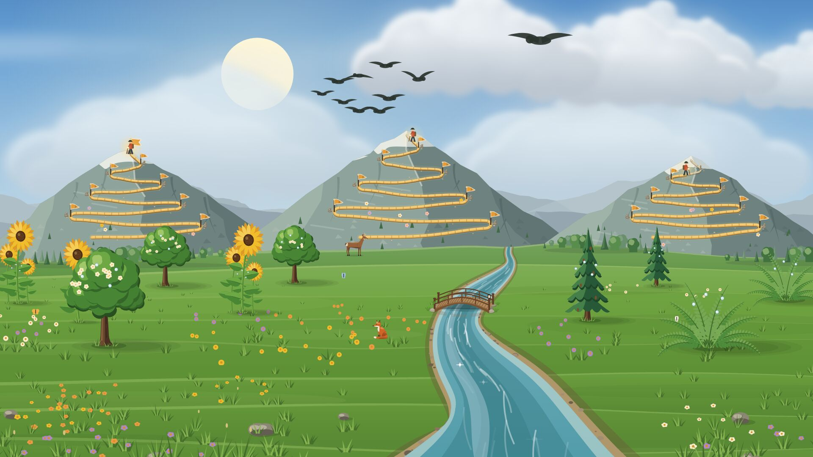
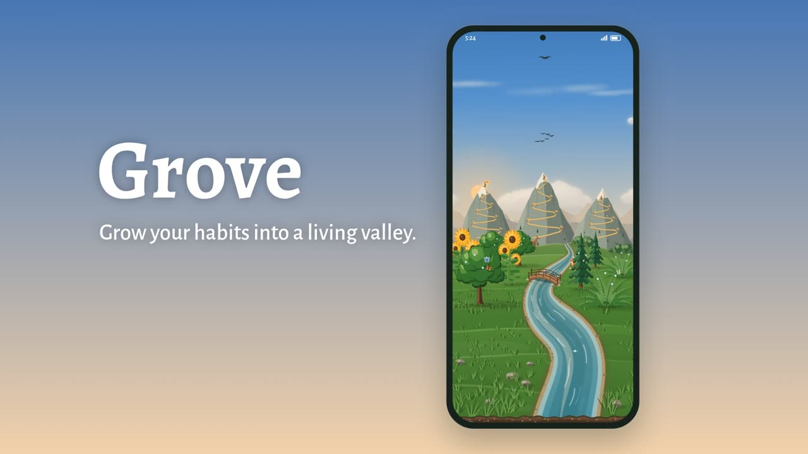

Grove
Grow a living valley from your habits. Build good ones and let go of the rest.
Every habit you build is a plant by the river. Complete it each day and it grows from a seed into a thriving tree. Every habit you let go of is a mountain trail. Each clean day takes you higher, up to the summit at one year.
The sky follows the real time of day, the moon shows its real phase, and the seasons are the ones where you live.

- Kind. Plants never die. A missed day takes only a little growth, and your best climb stays marked on the mountain.
- Private. No account, no ads and no tracking. Grove works without the internet, and your habits stay on your device.
- For your screen. Phones, tablets and foldables, with home-screen widgets and a calm full-screen zen mode.
Get Grove on Google Play, for Android phones, tablets and foldables.